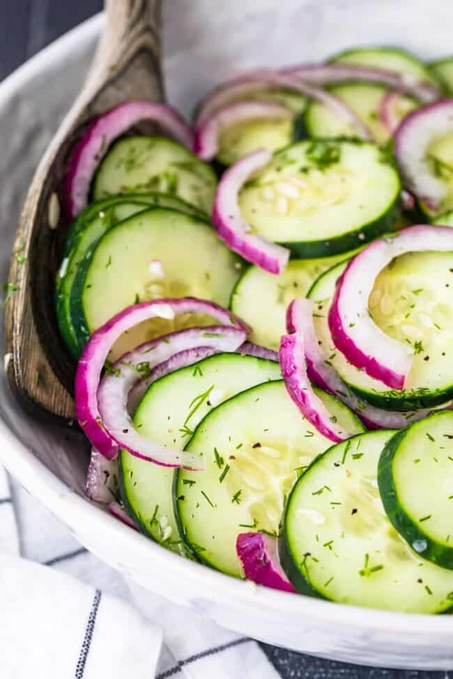

Cucumber Onion Salad

Description
This Cucumber Salad Recipe comes together quickly and with just a few ingredients. A refreshing and tangy side salad it’s a great accompaniment to chicken, grilled meat, seafood and so much more! Easy Cucumber Onion Salad is a must make for any Summer get together.
Ingredients
- 2 large cucumbers
- 1 red onion sliced
- 1/3 cup apple cider vinegar
- 1/4 cup water
- 1 tbsp sugar
- 1 tsp fine sea salt
- 1 tsp black pepper
Steps
- Slice each cucumber in 1/4 inch slices and add to a large bowl.
- Add in the sliced red onion (sliced into half moon and toss to combine
- In a mason jar or small bowl whisk together the apple cider vinegar, water, sugar, salt, and pepper.
- Pour the dressing mixture over the cucumber and onion and toss to fully coat/combine.
- Keep in the fridge until ready to serve.